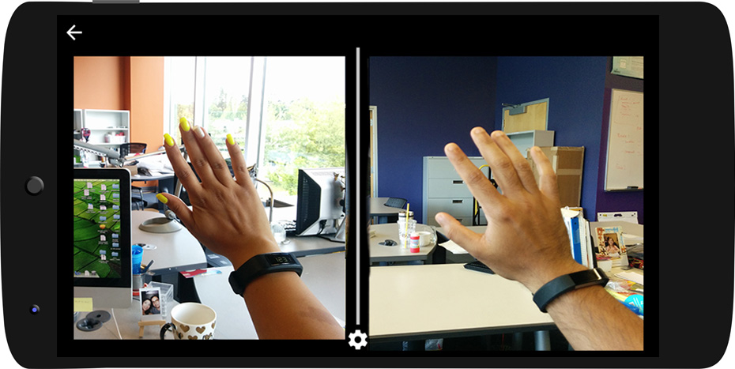

MyEyes: First-Person Video-Communication System for Couples

Description
A video communication system where couples are presented with their partner's first person view on a VR headset. We designed three interfaces of viewing the remote nad local view- horizontally split, vertically split and overlapped view. We used Google Cardboard along with two Android phones and developed the video chat application using WebRTC. Our aim to provide partners with a sense of body ownership and social presence.
Rui Pan is the principal researcher on this project and is currently working on the design of the evaluation of this prototype.